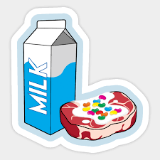

Milk Steak

Ingredients
Steak
Milk
Jelly Beans
Steps
Pour the milk into a pan and bring to the boil.
Pur the steak in the boiling milk and continue boiling.
Once the steak has been boiled over hard, remove and plate.
Top with raw jelly beans.